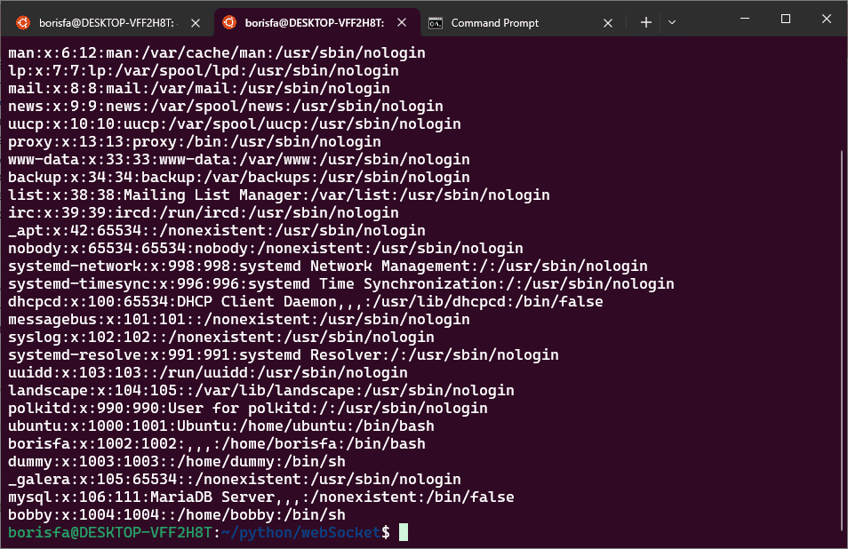
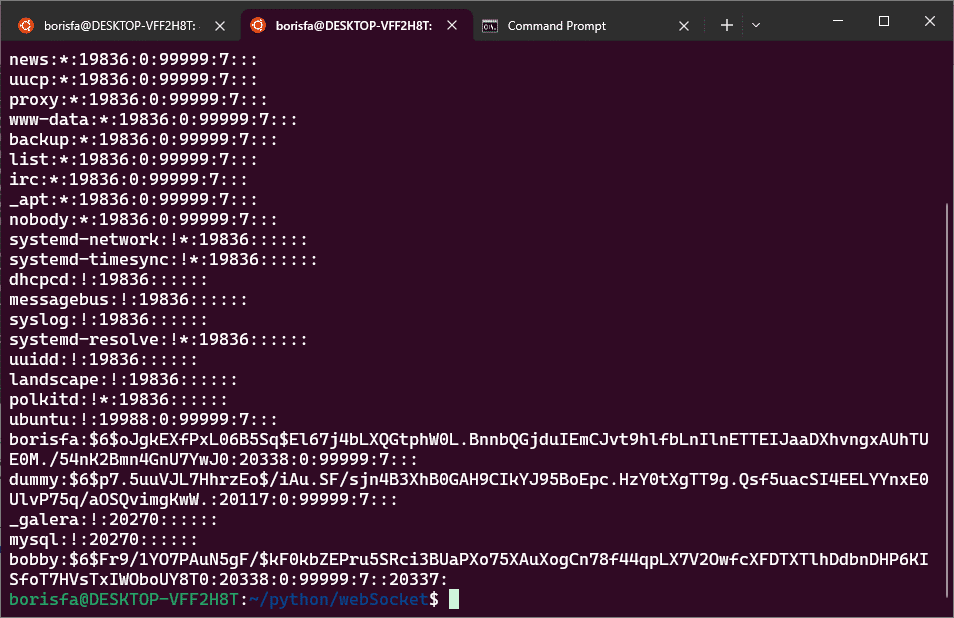

Since computers were developed there has been many individuals have sought explore them. Sometimes is a curiously, sometimes with malicious intent. This is one of the a primary reasons companies enforce very strict password policy . It like your home door, you have a locker but every one can open it, you take smarter locker but thieves are learning new methods how to crack it. This is endless game and the question is how many time, money and energy, you are ready to spend for you security. The question for thieves what is a profit comparing a risk to break you door.
There is no difference in digital world. You have network and save data on you computers and someone decides that your information have a value. And he tries to read it. Which way ? User and password allow anyone to login. How can hacker but better name is a cracker can access to you network ? The simplest way is to ask a former company worker about user and password that admin haven’t updated it yet. This is a too easy.
The next level is more interesting. Name is something limited there are number of names in any culture and attacker can prepare a list common names and attempt combinations with simple passwords. Unfortunately, many users rely on insecure choices such as “123456,” birth years, or name-based variations (e.g., Mcoh123, Rstev1975). Year of birthday is very popular part for many people password. This is a attacker dream. Crakers could login to you system and may steal ,drop or encrypt you data. And later they can contact and ask payment for a “help”.
How to protect youself ? The first way is create password policy usually is at least one upper case one lower case letter numbers and at least one special symbol. The second password save in hash there are numbers of hash algorithms such as MD5 , SHA-512, SHA-256, SHA-384, bcrypt, scrypt, yescrypt, PBKDF2, CRC32 or CRC64 each one has different purpose but as someone who was expireience with development cyber systems I can recommend to use slow because it takes more times for attacker to generate for large file hash and it is a good change to fail his script after timeout or using miscellaneous commands
who , last or others external commands , you can install them with sudo install <package name>
For each linux machine it has two file
/etc/passwd and /etc/shadow if you run cat /etc/shadow you see output like bellow

The first field before semicolon separator is username , second means the password are hashed and stored in /etc/shadow , next fields are user id and group id , where 0 -means root (super user) , 1-999 means system users and 1000+ means is normal user , who could be created by sudo useradd username. And last parameter means which shell is default.
File shadow you can open using sudo cat /etc/shadow sudo is must here. You see something like bellow

First column like in /etc/passw means user , in this case separator is “$” Second colomn means hashing type, linux allows you to choose few other types. Third parameter is salt and fourth is hash. It need salt to create diffrent hash for two user having same password.
$1$ means you are using MD5 hashing algorithm. I can't recomend it it old and weak.
$2a$ $2b$ and $2y$ means different bcrypt version algorithm. Later I will describe in detail why is better and why not.
$y$ means yescript
$5$ - SHA-256 and $6$ is SHA-512
There are a lot of disccussion about each hash type is better , the issue which makes attaker like more easy that 85% using SHA-256/512 or MD5. Linux allow you great solution there is file name common password which for me it looked here #here are the per-package modules (the “Primary” block)
#
/etc/pam.d/common-password – password-related modules common to all services
#
#here are the per-package modules (the “Primary” block)
password [success=1 default=ignore] pam_unix.so obscure sha512
#here’s the fallback if no module succeeds
password requisite pam_deny.so
#prime the stack with a positive return value if there isn’t one already;
#this avoids us returning an error just because nothing sets a success code
#since the modules above will each just jump around
password required pam_permit.so
#and here are more per-package modules (the “Additional” block)
#end of pam-auth-update config
In this case hashing method is sha512 and it makes attacker works not so easy , but in additional the positive way to secure you system is to change hashing method each two weeks.
Write you comments bellow.